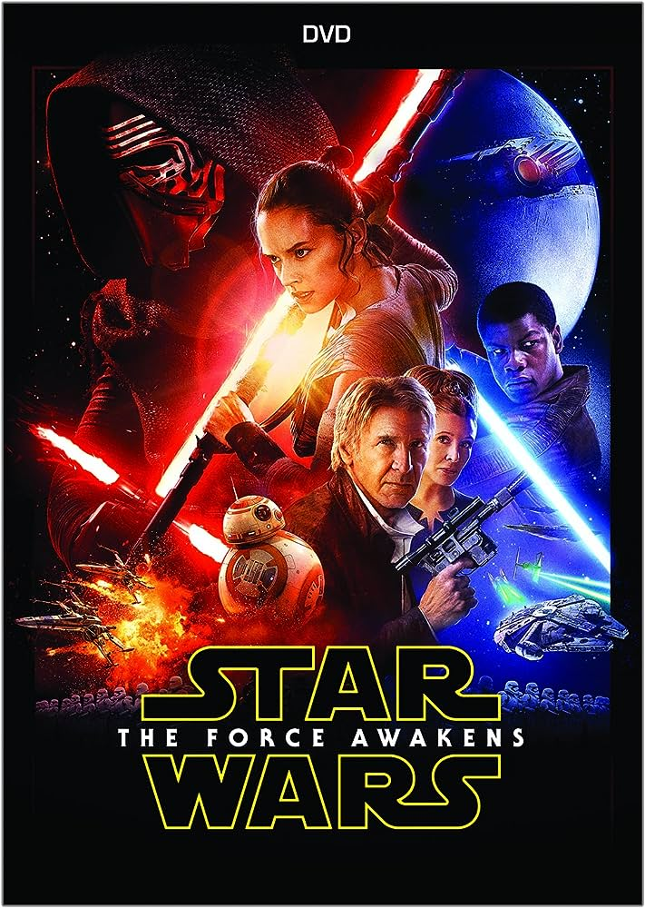

Unveiling the expanse of the galaxy, where the eternal dance of good and evil unfolds...
Episode IV: A New Hope (1977)
And so, the tale begins with 'A New Hope', where a young farm boy named Luke Skywalker embarks on an adventure grander than the sands of Tatooine could ever foretell. Upon receiving a distress hologram of Princess Leia through a pair of whimsical droids, Luke's world twirls into a whirlpool of starlit rebellion. With the wise, mystical hermit, Obi-Wan Kenobi, he sets forth on a cosmic escapade, meeting the roguish Han Solo and the fearless Princess Leia along the galactic trail. Amidst the storm of Imperial malevolence, they dance a daring ballet around the nefarious Death Star, striking a chord of hope against the dark orchestration of the Empire. Each twist in their journey strums the strings of destiny, composing the first stanza of a galactic odyssey that would echo through time and space.
Episode V: The Empire Strikes Back (1980)
Then, the galaxy trembled as 'The Empire Strikes Back'. Our heroes found themselves skidding on the icy tendrils of fate on the frozen plains of Hoth. As the sinister shadow of the Empire lunged across stars to snuff out the flickering flame of rebellion, Luke was led by cosmic whispers to the murky, mystical swamps of Dagobah. There, amidst the fog of ancient wisdom, he met the enigmatic Yoda, a sage of the stars, who spun the threads of the Force around Luke's fingers. Meanwhile, the silken bond of love began knitting around Leia and Han, amidst the clanking peril in Cloud City. The sky reverberated with the clash of lightsabers, as father and son danced the ancient duel of destinies. Vader's revelation sent tremors through Luke's soul, the echoes of which murmured through the cold metal chambers of the galaxy, leaving our heroes in a chilling suspense that hung among the stars like a dark moon waiting to eclipse the dawn.
Episode VI: Return of the Jedi (1983)
With 'Return of the Jedi', the rebel spirits soared high as they rallied against the oppressive Empire, striking a blaze of hope across the galaxy. Our valiant Luke Skywalker, now a Jedi Knight with heart full of courage and saber humming with ancient truth, orchestrated a daring rescue to snatch Han Solo from the clutches of the grotesque Jabba the Hutt. Amidst the verdant whispers of Endor, our heroes found unlikely allies in the Ewoks, whose primitive arrows twanged the song of rebellion against the cold, mechanical heart of the Empire. As stars held their breath, Luke faced his father Darth Vader, under the cold gaze of Emperor Palpatine, in a cataclysmic clash of fates amidst lightning arcs of betrayal and redemption. The Rebel Alliance, with fire in their hearts, engaged the Empire in a celestial showdown, hurling through the void to shatter the chains of tyranny. And as Vader's mask cracked open, so did the dawn of a new era, where the embers of the old Empire fizzled out under the joyous cries of freedom resonating through the galactic vastness.
The Phantom Menace (1999)

In 'The Phantom Menace', the stage is set with young Anakin Skywalker, a slave with eyes full of stars and skills that twirl the dusts of Tatooine in pod races. Our noble Jedi, Qui-Gon Jinn and his apprentice Obi-Wan Kenobi, cross paths with the youngling, sensing the rumbles of a grand destiny amidst the dark clouds of a Sith resurgence. As the sabers clink and clash, the ripple of a dark menace trembles across the serene waters of Naboo.
Attack of the Clones (2002)

As 'Attack of the Clones' unfurls, a decade has swept by, and the wind now carries whispers of war. Anakin, now a brash Jedi apprentice, finds his heart tethered to the grace of Padmé Amidala, while the sinister threads of conspiracy weave around the galaxy, sprouting into the Clone Wars, under the veil of a mysterious Count Dooku. The stars shiver as shots echo across the cosmos, heralding the storm lurking on the horizon.
Revenge of the Sith (2005)
With 'Revenge of the Sith', the tempest rages, tearing asunder the skies of Coruscant, as our once hopeful Anakin, now a vessel of molten fury, descends into the abyss of Darth Vader. Amidst the ashes of the Jedi Order, the sinister cackle of Emperor Palpatine echoes through the cold halls of a newly christened Galactic Empire. As hope seems but a distant star, the twin beacons of a new hope, Luke and Leia, are born under the veiled whispers of rebellion.
The Force Awakens (2015)
The drums of destiny beat once more in 'The Force Awakens', as the embers of the old Empire morph into the sinister First Order. Amidst the looming shadows, rises a scavenger, Rey, with dreams whispering of faraway stars. With legends of yore, Han Solo and Leia Organa, by her side, and a map to the lost Luke Skywalker, the adventure cascades across the starry expanse, kindling the sparks of resistance against the dark tide of Kylo Ren and his merciless forces.
The Last Jedi (2017)

In 'The Last Jedi', the mysteries of the Force beckon as Rey trains with Luke, who's haunted by specters of the past. While the Resistance gasps for breath under the relentless chase of the First Order, old and new heroes alike face the ghosts of their past, forging the path of the defiant spark that will light the fire to burn the First Order down. Amidst the folds of destiny, choices echo through the cosmic silence, knitting the fabric of hope and despair.
The Rise of Skywalker (2019)

As 'The Rise of Skywalker' unfolds, the final battle dawns, with the echoes of Emperor Palpatine’s malevolent laughter resonating through the stars. Our brave Rey, with the essence of Skywalker flowing through her, leads the gallant charge against the shrouded menace. As sabers clash and starfighters whirl in the dance of fate, legacies intertwine and destinies are fulfilled, carving the tales of heroism in the everlasting cosmic chronicle.
The Directors
George Lucas, the master puppeteer of this grand cosmic theatre, orchestrated a saga that soars across the galaxies. With a mind as expansive as the universe, he carved out realms of adventure and heroism that are etched in the stars. Unveiling a cosmos where the dance of destiny entwines with the hopeful heartbeats of rebellion, George's genius birthed legends, heroes, villains and a tale that resonates through the fabric of time. The maestro, with a sweep of his imaginative wand, didn’t just create movies, but a home for dreamers, a playground for the imaginative soul, and a canvas where every stroke painted echoes of courage, love, and the eternal tussle between shadows and starlight. In the grand tapestry of cinematic history, George Lucas' name twinkles with a light as enduring and inspiring as the faraway galaxies of his creation. His vision, a compass that navigated us through the stormy seas of space, where amidst the swirl of stars, we found tales that are now etched in the cosmic silhouette of storytelling.
The Cast
 Mark Hamill as Luke Skywalker
Mark Hamill as Luke Skywalker
 James Earl Jones as the voice of Darth Vader
James Earl Jones as the voice of Darth Vader
 Adam Driver as Kylo
Adam Driver as Kylo
Reception & Box Office
With "A New Hope", the galaxy first trembled with the echoes of box office tills ringing to the tune of a whopping $775 million globally. Critics and audiences alike fell head over heels for this stellar start of a grand cosmic ballet.
Then came "The Empire Strikes Back", striking gold yet again with a celestial shower of around $547 million. The saga's dark and twisting tale kept fans on the edge of their seats, their eyes glued to the silver screen as if held by a tractor beam.
"Return of the Jedi" soared high on wings of box office success too, raking in around $475 million, with fans thronging to witness the grand finale of the original trilogy's lyrical duel between good and evil.
"The Phantom Menace", ah, ushered in a new era with a bang, as it grossed over $1 billion, making it one of the crowning jewels of the saga. Critics, however, were torn between the dark and the light, with some finding it a tad underwhelming.
"Attack of the Clones", though not as meteoric as its predecessor, still sparkled brightly with around $649 million, despite some clouds of mixed critical reception gathering on the horizon.
"Revenge of the Sith" saw the box office flames reignited, scorching its way to over $848 million, with critics and audiences alike warming up to this fiery finale of the prequel trilogy.
Now, as we leap through time to "The Force Awakens", oh, the stars aligned once more as it rocketed to a staggering $2.068 billion, becoming a box office supernova with fans and critics rejoicing in its wake.
"The Last Jedi", though stirring a cauldron of mixed feelings amongst the devout Star Wars congregation, still soared through the box office skies with over $1.3 billion, proving the enduring allure of this galactic odyssey.
As "The Rise of Skywalker" unfolds, the final battle dawns, with the echoes of Emperor Palpatine’s malevolent laughter resonating through the stars. Our brave Rey, with the essence of Skywalker flowing through her, leads the gallant charge against the shrouded menace. As sabers clash and starfighters whirl in the dance of fate, legacies intertwine and destinies are fulfilled, carving the tales of heroism in the everlasting cosmic chronicle.